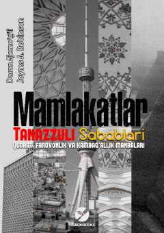

MTDavlatlarning taraqqiy etishi yoki tanazzulga uchrash sabablarini o'rganuvchi mashhur asar.
Mazkur kitob turli davlatlarning nima uchun badarg'a yoki taraqqiy etgani, iqtisodiy va siyosiy institutlarning jamiyat rivojidagi hal qiluvchi roli haqida hikoya qiladi. Mualliflar keng qamrovli tarixiy tahlillar va misollar yordamida inklyuziv hamda ekstraktyw institutlarning farovonlikka ta'sirini ochib berishadi.